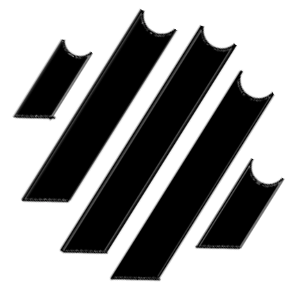

2026

Operations manager of the "El Milagro" Baja California project. I trained and supervised local farmworkers on the operation of High Degree's steam machine. Together, we steamed 25 acres of land to kill weeds and disease before planting organic strawberries.
2024 – 2026

Founding engineer at a stealth startup in Silicon Valley building IoT + AI systems to protect critical infrastructure. I developed our robots end-to-end: planning, purchasing, assembling, programming (in C++, Python, and ROS 2), and testing. I showcased the company's technology, robotic and otherwise, as the technical face of the company during fundraising, creating pitch decks and demos that secured a $15M seed round.
2023 – 2025

AI-powered full-stack mobile app developer. I created a promptless virtual assistant using Swift/SwiftUI with a Django backend. The project was a masterclass in wiring LLMs into user interfaces and a firsthand experience in how developers interact with LLM-powered tools.
2022 – 2024

Customer-facing test engineer at Skyloom, building laser communication hardware for satellites. I captured customer requirements in Verification & Validation matrices, then designed, built, and executed tests for our optical communication systems. These became live demonstrations for government and commercial partners, unlocking milestone payments and larger contracts.
2020 – 2021

MS in Mechanical Engineering at UC Berkeley. GEM Fellow. Two summer internships at The Aerospace Corporation. My thesis explored design concepts for a Position, Navigation, and Timing service for the Earth–Moon corridor, essentially a GPS architecture for future lunar missions.
2016 – 2019

Owner's Engineer at Surf Cove, a small company dedicated to creating perfect surf destinations. I designed, built, and tested prototype wave-generating machines inspired by Kelly Slater's Surf Ranch, and later relocated to Mexico and became fluent in Spanish in preparation to construct a surf machine there.
2012 – 2016

BS in Mechanical Engineering at the University of Southern California. Two summer internships at NASA, where I created designs and prototypes of the docking mechanism for Astrobee, the free-flying robot aboard the International Space Station. I worked the docking interface from both sides (the robot side and the dock side) to enable fully autonomous docking and recharging in microgravity.